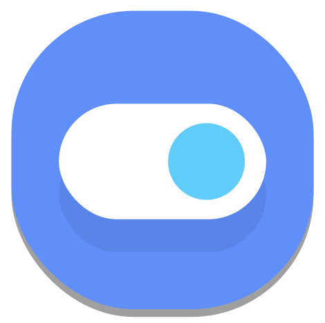 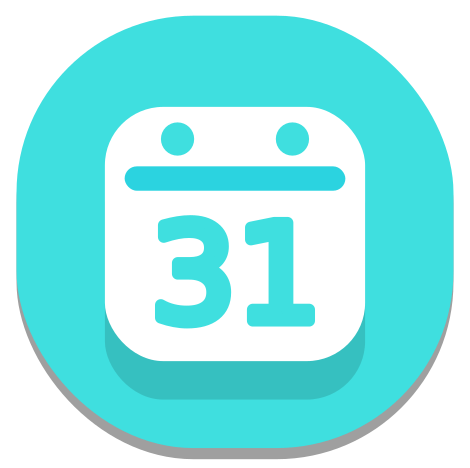 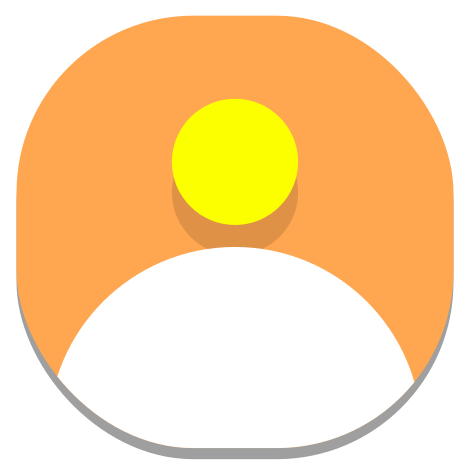 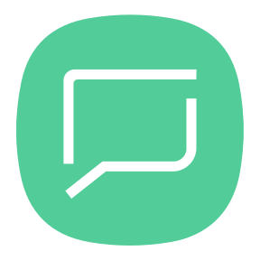
NeoEscritoire is a web-tool that is able to bring desktop-icons to OSs without icons (Like/Especially ChromeOS)
Before doing anything else, I'm going to show you some things that NeoEscritoire can do :)
Before doing anything else, I'm going to show you some things that NeoEscritoire can do :)
Backgrounds
You can pick one of the pre-added backgrounds or use a custom one by using an URL.
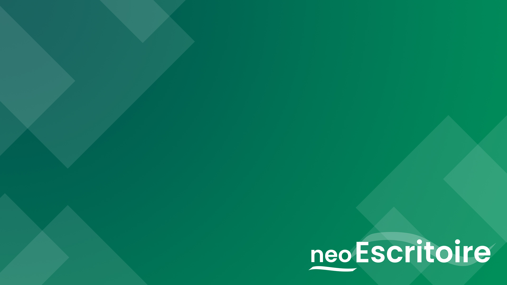
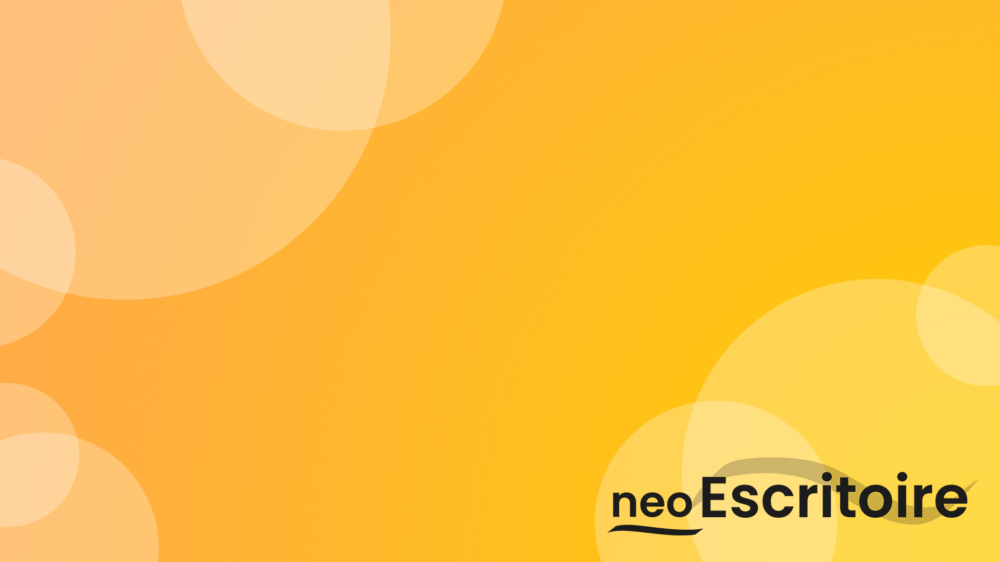
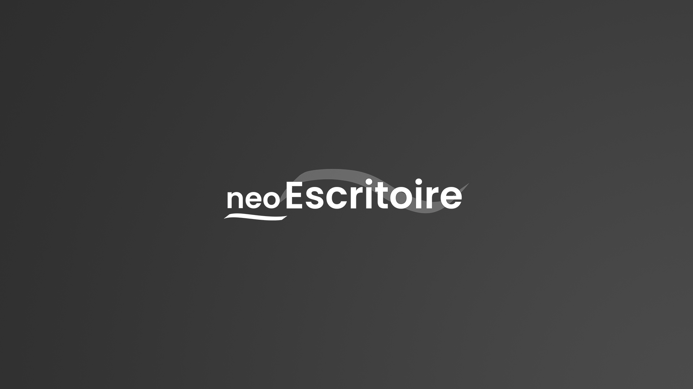
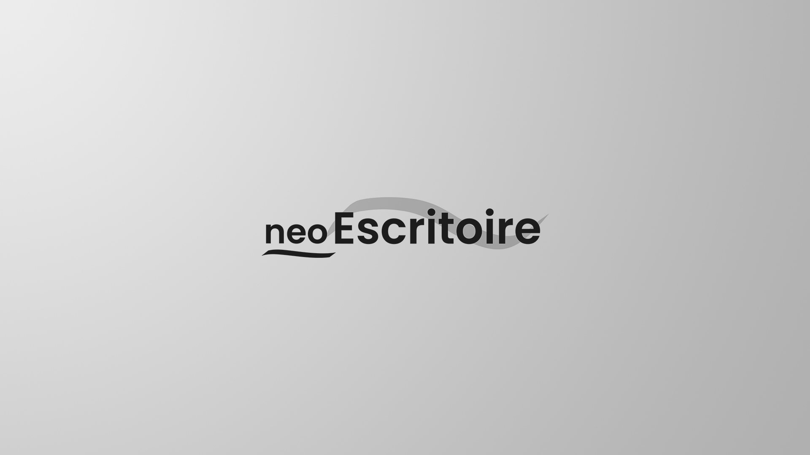
Custom Icons
Apart from the default ones, you can add icons with your own images or automatical ones (based on the URL), by pressing 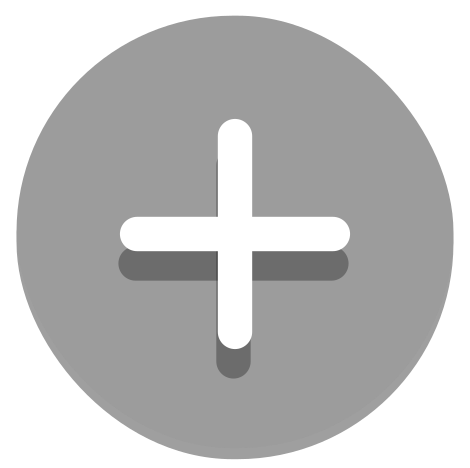, and then filling a little form with its details.
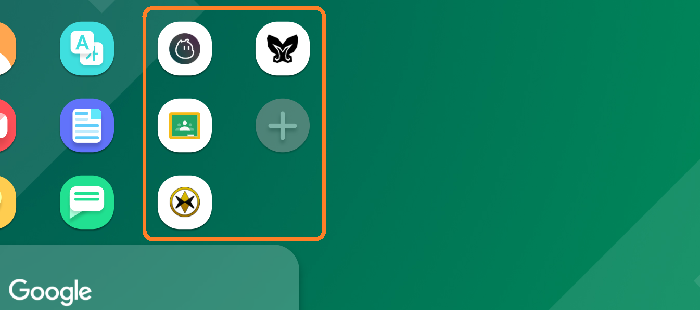
You can delete any icon by right clicking  .
.
Searching on Google
For giving an end to this tour, we are going to talk about a very useful function.
You can Search on Google by using a searchbox. That way, you'll be Faster doing your activities.
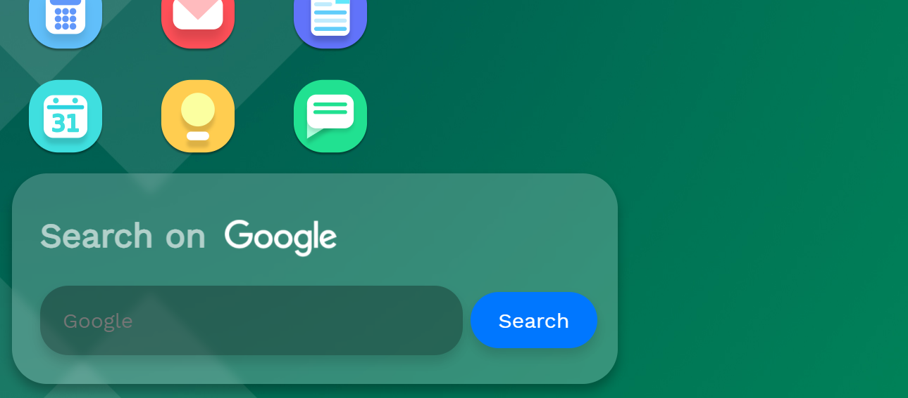
You can Search on Google by using a searchbox. That way, you'll be Faster doing your activities.
And that's all!!
Now you know all the important things that NeoEscritoire has!!
Enjoy NeoEscritoire!!, and show it to your friends!!
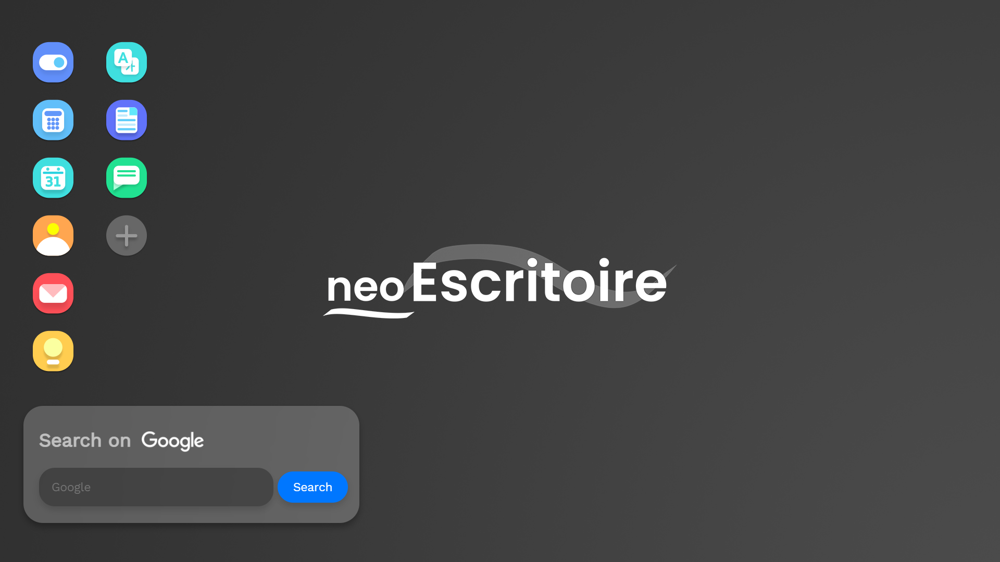
Enjoy NeoEscritoire!!, and show it to your friends!!